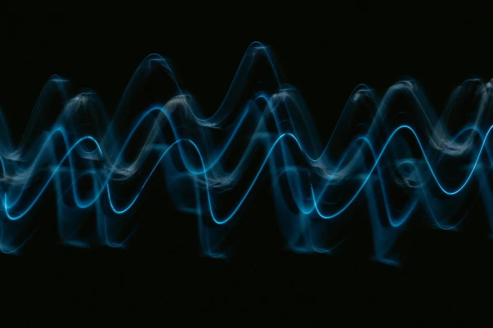
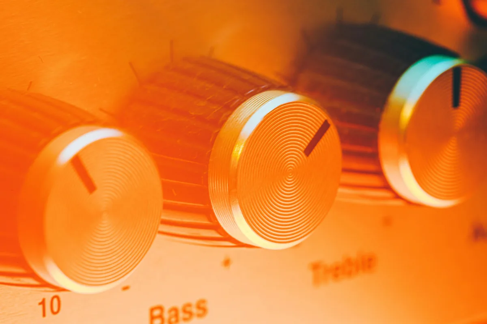

Kiedy realizator dźwięku mówi, że bas jest "za gruby", a góra "syczący" - mówi o częstotliwościach. Kiedy słyszysz, że czyjś głos "ma dużo środka" albo że bębny "są puste" - też chodzi o częstotliwości. To język, którym opisuje się dźwięk w produkcji muzycznej. Zrozumienie go nie wymaga wiedzy z fizyki - wymaga tylko dobrego opisu tego, co słyszysz.
Czym jest częstotliwość dźwięku
Dźwięk to drgania powietrza. Gdy membrana głośnika lub struna gitary drga, wprawia cząsteczki powietrza w ruch - te przekazują go dalej, tworząc falę dźwiękową, która dociera do twojego ucha. Częstotliwość opisuje, ile razy na sekundę ta fala się powtarza. Jednostką jest herc (Hz) - jeden herc to jedno drganie na sekundę.
Ludzkie ucho słyszy dźwięki w zakresie od ok. 20 Hz do ok. 20 000 Hz (20 kHz). To dość duży przedział - i każda jego część brzmi i odczuwa się zupełnie inaczej. Niskie częstotliwości odczuwasz bardziej ciałem niż uszami (stąd dudnienie basu w klatce piersiowej na koncercie). Wysokie częstotliwości słyszysz wyraźnie jako dźwięki ostre, cienkie, syczące.
W praktyce każdy dźwięk muzyczny składa się nie z jednej częstotliwości, ale z wielu naraz - fundamentu (tonu podstawowego) i alikwotów (harmonicznych), które nadają mu charakterystyczną barwę. Dlatego gitara i fortepian grające ten sam dźwięk "A" brzmią zupełnie inaczej - mają inne proporcje harmonicznych.
Podział pasma - jak myśleć o częstotliwościach
W produkcji muzycznej umownie dzieli się pełne pasmo słyszalne na kilka obszarów. Granice nie są sztywne i różni producenci mogą je nieco inaczej wyznaczać, ale poniższy podział jest powszechnie stosowany i wystarczający na start.

Sub-bas: 20-60 Hz
To najniższy obszar, który bardziej czujesz niż słyszysz. Sub-bas to drgania, które odczuwasz w klatce piersiowej i brzuchu na głośnym systemie nagłośnieniowym. W muzyce odpowiada za energię i "masę" basu - szczególnie ważny w gatunkach takich jak techno, dubstep czy hip-hop.
Problem z sub-basem polega na tym, że jest trudny do kontrolowania. Na małych głośnikach i słuchawkach słabo go słychać - można więc nieświadomie dodać go za dużo, a mix na dużym systemie będzie brzmiał brudno i ciężko. Dlatego wielu producentów stosuje high-pass filter (filtr górnoprzepustowy), który odcina sub-bas z instrumentów, które nie powinny go zawierać - np. z gitary akustycznej czy wokalu.
Bas: 60-250 Hz
To obszar, który słyszysz już wyraźnie jako "dół" - fundament basu elektrycznego, stopy (kick drum), lewej ręki fortepianu. Bas nadaje muzyce ciężar i poczucie mocy. Zbyt dużo basu w miksie sprawia, że brzmi on "błotniście" i nieczytelnie. Zbyt mało - jest cienki i płaski.
To pasmo jest szczególnie wrażliwe na akustykę pomieszczenia. Stojące fale basowe w pokoju (rezonanse pomieszczenia) mogą sprawić, że słyszysz basu za dużo lub za mało w porównaniu z tym, co faktycznie jest w nagraniu - dlatego akustyka pokoju ma tak duże znaczenie przy miksowaniu na monitorach.
Dolny środek: 250-500 Hz
Często pomijane pasmo, które ma ogromny wpływ na czytelność miksu. To obszar, gdzie koncentruje się "ciało" wielu instrumentów - dolny rejestr wokalu, środkowe tony gitary, korpus perkusji. Zbyt dużo energii w tym miejscu sprawia, że miks brzmi "pudełkowato" - taki suchy, zamknięty dźwięk, jakby nagranie było zrobione w szafie. Zbyt mało - instrumenty tracą substancję i brzmią cienko.
Jeśli twój miks brzmi "błotniście", ale nie wiesz gdzie leży problem, dolny środek jest pierwszym miejscem do sprawdzenia. Delikatne cięcie między 250 a 400 Hz potrafi wyraźnie rozjaśnić i oczyścić brzmienie.
Środek: 500 Hz - 2 kHz
To pasmo, w którym koncentruje się większość energii ludzkiego słuchu i większość instrumentów muzycznych. Środek determinuje czytelność wokalu, obecność gitary, charakter fortepianu. Ludzkie ucho jest na ten zakres najczulsze - dlatego przesada w tym miejscu brzmi szczególnie nieprzyjemnie i męcząco.
Zbyt wypchnięty środek sprawia, że miks brzmi "nosowo" lub "telefonicznie". Zbyt wycofany środek sprawia, że instrumenty i wokal "toną" - są słabo czytelne mimo że głośnościowo są na miejscu. Dobry balans środka to jeden z ważniejszych elementów czytelnego miksu.
Górny środek: 2-6 kHz
To obszar obecności i ataku - to tutaj jest "ostry" dźwięk strun szarpanej gitary, "ząbek" perkusji, syczące spółgłoski wokalu. Podbicie w tym zakresie sprawia, że instrumenty "wychodzą" do przodu i brzmią bardziej agresywnie. Zbyt dużo energii między 2 a 4 kHz to jeden z najczęstszych powodów, dla których miks brzmi ostro i męcząco przy dłuższym słuchaniu.
Jednocześnie to właśnie tutaj możesz sprawić, że wokal będzie bardziej wyrazisty i "obecny" w miksie - bez podnoszenia jego głośności. Delikatne podbicie wokalu między 2 a 3 kHz to klasyczny trick realizatorów dźwięku.
Górne pasmo: 6-12 kHz
Powietrze, blask, otwartość - to słowa, którymi opisuje się ten zakres. Górne pasmo nadaje nagraniu przestronność i "oddechu". Tu słyszysz szelest talerzy perkusyjnych, wysokie harmoniczne fortepianu, "powietrze" wokół wokalu. Podbicie w tym zakresie rozjaśnia miks. Cięcie sprawia, że brzmi ciemniej i bardziej "vintage".
To pasmo jest też wrażliwe na sybilancję - nadmierne syczenie spółgłosek S i Sz w wokalu. Jeśli wokal "syczy", winowajcą jest najczęściej obszar między 6 a 10 kHz. Do jego kontrolowania służy specjalna wtyczka zwana de-esserem.
Bardzo wysokie: 12-20 kHz
Poza zasięgiem świadomego słyszenia dla wielu dorosłych słuchaczy, ale mimo to odczuwalne jako "powietrze" i otwartość nagrania. Dobrze nagrane i przetworzone nagranie ma energię nawet tutaj - cyfrowe nagrania o niskiej jakości lub nadmiernie skompresowane pliki MP3 tracą w tym zakresie jako pierwsze. To jeden z powodów, dla których audiofile słyszą różnicę między plikiem WAV a mocno skompresowanym MP3.
Jak częstotliwości wpływają na relacje między instrumentami
Jeden z najczęstszych problemów w amatorskich miksach polega na tym, że kilka instrumentów "siedzi" w tym samym obszarze częstotliwości i wzajemnie sobie przeszkadza. To zjawisko nazywa się maskowaniem - jeden dźwięk zakrywa drugi, bo oba rywalizują o tę samą przestrzeń.
Klasyczny przykład: bas elektryczny i stopa perkusji (kick). Oba instrumenty mają dużo energii w zakresie 60-120 Hz. Jeśli nie zadbasz o to, żeby każdy z nich zajmował nieco inny fragment tego pasma, w miksie będą tworzyły "błoto" - nie będzie słychać wyraźnie ani jednego, ani drugiego. Rozwiązaniem jest EQ - lekkie cięcie w basie tam, gdzie stopa ma swój fundament, i odwrotnie.
To właśnie dlatego equalizer jest tak podstawowym narzędziem w miksie. Nie chodzi o "ulepszanie" dźwięku sam w sobie - chodzi o zrobienie miejsca dla każdego instrumentu w spektrum częstotliwości tak, żeby wzajemnie się nie blokowały.
Narzędzia do analizy częstotliwości
Słuch to podstawa, ale wzrok pomaga - szczególnie na początku, gdy ucho nie jest jeszcze wyćwiczone. Analizator spektrum (spectrum analyzer) to wtyczka, która wyświetla w czasie rzeczywistym wykres pokazujący, ile energii ma sygnał w każdym paśmie częstotliwości. Możesz go użyć zarówno na pojedynczej ścieżce, jak i na masterze całego miksu.
Większość DAW-ów ma wbudowany analizator spektrum. Darmowe alternatywy zewnętrzne to np. SPAN od Voxengo - jedna z najpopularniejszych bezpłatnych wtyczek analitycznych. Nie zastępuje słuchu, ale pomaga zobaczyć to, czego jeszcze nie słyszysz - np. nadmiar sub-basu, który nie jest słyszalny na małych głośnikach, ale będzie problematyczny na dużym systemie.
Jak ćwiczyć rozpoznawanie częstotliwości
Wiedza o pasmach jest bezużyteczna bez praktyki słuchowej. Rozpoznawanie częstotliwości to umiejętność, którą można trenować - i która z czasem staje się intuicyjna. Kilka skutecznych sposobów na ćwiczenie:
- Ćwiczenia z EQ. Ustaw wąskie podbicie (duże Q) i powoli przeciągaj je po spektrum, słuchając co się zmienia. To najszybszy sposób na nauczenie się, jak brzmią poszczególne pasma.
- Aktywne słuchanie znanych nagrań. Włącz dobrze znany utwór i spróbuj opisać słowami jego poszczególne elementy - gdzie jest bas, jak brzmi wokal, czy miks jest jasny czy ciemny. Z czasem zaczniesz te opisy kojarzyć z konkretnymi pasmami.
- Aplikacje do treningu słuchu. Istnieją dedykowane aplikacje i narzędzia online (np. Quiztones, SoundGym) do ćwiczenia rozpoznawania częstotliwości - dają losowe filtry i sprawdzają, czy rozpoznasz pasmo ze słuchu.
- Analiza na analizatorze spektrum. Równolegle ze słuchaniem patrz na wykres - z czasem zaczniesz kojarzyć to, co widzisz, z tym, co słyszysz.
Nie oczekuj szybkich efektów - rozwijanie słuchu to proces na miesiące i lata. Ale każda godzina świadomego słuchania procentuje w pracy przy miksie.
Częstotliwości a mastering
Na etapie masteringu analiza częstotliwości nabiera szczególnego znaczenia. Gotowy miks powinien mieć względnie równomierne rozłożenie energii w spektrum - bez wyraźnych "garbów" w jednym miejscu i "dziur" w drugim. Profesjonalni mastering engineerowie porównują spektrum miksu z referencyjnymi nagraniami z danego gatunku, żeby ocenić, czy balans tonalny jest zbliżony do standardu.

To nie znaczy, że każdy miks musi wyglądać identycznie na analizatorze. Muzyka jazzowa będzie miała inny rozkład energii niż heavy metal, a ambient inny niż pop. Ale w obrębie gatunku istnieją pewne oczekiwania słuchaczy co do brzmienia - i duże odchylenie od nich często brzmi "amatorsko", nawet jeśli trudno to od razu wyartykułować.
Najczęstsze pytania (FAQ)
Co to są częstotliwości w muzyce?
Częstotliwość opisuje, ile razy na sekundę drgają cząsteczki powietrza tworzące dźwięk. Mierzy się ją w hercach (Hz). Ludzkie ucho słyszy zakres od ok. 20 Hz do 20 000 Hz - niskie częstotliwości słyszymy jako bas, wysokie jako dźwięki ostre i syczące. W muzyce każdy instrument ma swój charakterystyczny rozkład częstotliwości, który nadaje mu unikalną barwę.
Jakie są pasma częstotliwości w muzyce?
Pełne pasmo słyszalne dzieli się umownie na kilka obszarów: sub-bas (20-60 Hz) - odczuwalny bardziej ciałem niż uszami; bas (60-250 Hz) - fundament rytmu i ciężar brzmienia; dolny środek (250-500 Hz) - ciało instrumentów; środek (500 Hz - 2 kHz) - czytelność wokalu i instrumentów; górny środek (2-6 kHz) - obecność i atak; górne pasmo (6-12 kHz) - blask i otwartość; oraz bardzo wysokie (12-20 kHz) - "powietrze" nagrania.
Dlaczego miks brzmi "błotniście" i jak to naprawić?
Błotniste brzmienie najczęściej wynika z nagromadzenia energii w pasmie 60-400 Hz - szczególnie gdy kilka instrumentów (bas, stopa, gitara rytmiczna) rywalizuje o tę samą przestrzeń częstotliwości. Rozwiązaniem jest EQ - delikatne cięcia w miejscach, gdzie instrumenty się nakładają, oraz użycie high-pass filtra na instrumentach, które nie potrzebują sub-basu.
Czym jest maskowanie częstotliwości?
Maskowanie to zjawisko, w którym jeden dźwięk zakrywa drugi, bo oba zajmują ten sam obszar spektrum. Klasyczny przykład to bas elektryczny i stopa perkusji konkurujące o pasmo 60-120 Hz - bez odpowiedniego EQ żaden z nich nie będzie słyszalny wyraźnie. Rozwiązaniem jest "zrobienie miejsca" każdemu instrumentowi przez kształtowanie ich charakterystyki częstotliwościowej.
Jak ćwiczyć rozpoznawanie częstotliwości ze słuchu?
Najskuteczniejsza metoda to ćwiczenia z EQ - ustawiasz wąskie podbicie i przeciągasz je po spektrum, ucząc się jak brzmią poszczególne pasma. Pomocne są też aplikacje do treningu słuchu (np. Quiztones, SoundGym) oraz aktywne słuchanie znanych nagrań z analizatorem spektrum włączonym równolegle. To umiejętność na miesiące ćwiczeń, ale każda godzina świadomego słuchania procentuje.
Do czego służy analizator spektrum i czy jest potrzebny?
Analizator spektrum to wtyczka wyświetlająca w czasie rzeczywistym wykres energii sygnału w każdym paśmie częstotliwości. Nie zastępuje słuchu, ale pomaga zobaczyć to, czego ucho jeszcze nie wyłapuje - np. nadmiar sub-basu niewidoczny na małych głośnikach. Większość DAW-ów ma analizator wbudowany; popularną darmową alternatywą zewnętrzną jest SPAN od Voxengo.